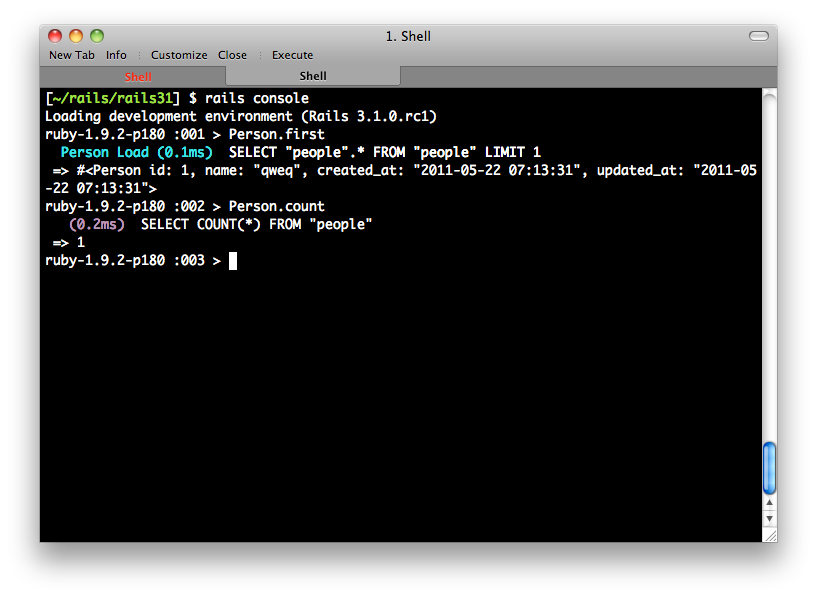

本书涵盖了Ruby on Rails绝大部分的常用功能以及介绍，为了兼顾入门及实战，本书拆分成两个部分：Part 1前八章为入门实作，逐步实作一个活动管理系统、Part 2深入剖析各种元件和高阶议题。本书期许可以让有些许经验的网页程式设计师，可以在本书中学习Rails之道，将之实际应用在工作之中。
张文鈿，网络上的代号为ihower，曾担任RubyKaigi 2011、RubyConf China、OSDC.TW、COSCUP、WebConf.TW歷届讲者。2006年开始接触Rails，从此爱上Ruby这个极具丰富乐趣及高生产力的程式语言。他同时也是Ruby Taiwan社群和RubyConf Taiwan大会的创办人。目前为创业学校ALPHACamp的专职讲师。
笔者的部落格http://ihower.tw以及Twitter帐号@ihower，欢迎追踪订阅。
本书使用的Rails版本是4.2，Ruby版本是2.1。本书出版后请参考本书网站以获得最新相容性修改。
你可以在http://ihower.tw/rails4看到本书最新版本以及纸本勘误。如果你有任何问题，也欢迎来信给我。
为了避免读者混淆指令的使用情境，区分如下：
$开头的是指命令列下的指令>开头的是指在rails console主控台下的指令#是註解说明例如在以下的操作中，我们先输入了rails console进入Rails的主控台，然后输入Person.first和Person.count：

那么在本书中，会这样书写：
$ rails console
Loading development environment (Rails 4.2.0)
> Person.first # <Person id: 1>
> Person.count # 1
本书主要对象为网站程式设计师，比较不适合完全没有网页开发经验的朋友，在学习Rails前，最好对以下知识有基本认识：
如果您有PHP/MySQL或ASP、JSP等网页应用程式开发经验，相信这些对您应该不陌生。
本书起初的材料来源，来自于准备OSSF主办的Ruby on Rails工作坊课程，在这课程中获得了教学相长的宝贵经验，非常感谢中研院自由软件铸造场对于自由软件和自由软件社群的支持。本书在撰写过程也收到非常多台湾和大陆读者来信勘误指教，就算只是问一个小问题或是鼓励，也对这本书产生了良性回馈，在此也一併感谢你：hSATAC、timloo0710、seekcalm、ETBlue、Michael Wang、liukai、inepalon、Ya-yu Huang、aiasfina、David Chuang、Yu-Yao Chang、yang thomas、inepalon、guan-ting chen、Eric.Xiong、pptpb.tw、saitoTK、le jerry、jeffchen1453、EvenWu、Jasper CAI、dreamy0909、JmeHsieh、逍遥、Mark GK、LiChun、tonytonyjan、Kang-Yu Li、曾小黑、Pomin Chen、jzg、ayaya、Juanito Fatas、红音也、Vincentzh、idarfan、lixing、jerrycheng、maxz、TaopaiC、Fukuball、klobo、liyq205、EIA ANG、caiguo、良葛格、Lam、Daniel Tsai、Hillman Yang、sdjcw13、Jingqiang、foxzool、danix、Yang Weiqi、周裕波、David Chang、张杰、Sgar Wang、zw963、feynixs、Youhua Wang、韩冰、Silver Chen、Kerby Wang、贵超、everyx Lo、shch、David Huang、士扬、Dars、小强、Daniel Yuen、Kevin Shen、floydsoft、Yuan-Hong Zeng、纪东、浩翔、Cray Kao、Theresa、奕辰、WM、Po-Yu、ZhaoZijie、Sean Chen、克彦、庆冲、Gary Cruise、Lester、yousheng、诗凯、Wei-Luan。
最后，特别感谢gogojimmy和雨苍协助部分章节初稿及润稿，以及ALPHACamp的学员们为本书的完成做了最后的衝刺。